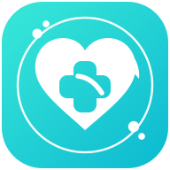
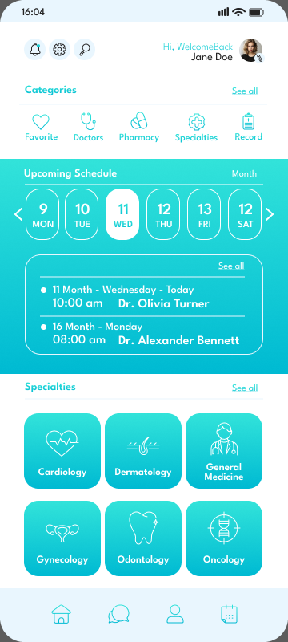

01
DISCOVER
Find the right doctor
Home → Specialties → Doctor list → Info → Full profile.
Home→Specialties→Doctors→Profile

HealthTrack Flutter Product Showcase GitHub ↗Doctor discovery, booking, appointments, medical records, pharmacy, messaging, favorites and payment journeys — implemented as one coherent mobile experience.
The source kit was translated into reusable UI primitives, route families and connected flows. The result behaves like a product showcase rather than a screenshot catalogue.
Home → Specialties → Doctor list → Info → Full profile.
Date, time, payment method and appointment states are part of one path.
Medical record, allergies, analysis, vaccinations and history live under one system.
Favorites, messages, pharmacy, profile and notifications keep the experience connected.
Move through selected HealthTrack views inside the device preview. Each image preserves the full mobile frame so the screen stays centered and never gets clipped.

The main HealthTrack entry point with quick access, upcoming care and doctor discovery.
Explore the implementation ↗The implementation reuses patterns where the source design repeats them, while every mapped source frame keeps a distinct route.
From onboarding through payment success, every top-level HealthTrack frame has a Flutter destination.
Cardiology, dermatology, general medicine, gynecology, odontology, oncology, ophthalmology and orthopedics.
Add record, record menu, allergies, analysis, detail, vaccinations and medical history flows.
State changes are not decorative. The showcase build preserves relevant mutations during the app session.
The current downloadable showcase uses a local data adapter. The screen layer talks to contracts, not to that adapter directly.
Root and nested flows use deterministic back fallbacks instead of silently failing when there is no pop history.
Route catalog, data mutations, navigation contracts and the Favorites → Back regression are covered by tests.
Short fades, slides and state transitions support the medical visual tone instead of competing with it.
GitHub Actions runs Flutter analysis and automated tests on the repository.
The release APK is built from this repository and demonstrates the implemented app journeys with local session data.
This project demonstrates the implemented mobile product experience. The downloadable build does not claim live healthcare providers, real patient records, real doctor availability or production payment processing.